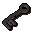

Priest in Peril
Scripts in
scripts/quests/quest_priestperil/NPCs involved
Items involved

Iron keyInvolvement is derived from identifiers referenced by the quest scripts.
scripts/quests/quest_priestperil/
Iron keyInvolvement is derived from identifiers referenced by the quest scripts.